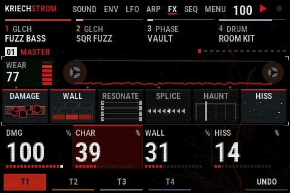

В браузере: открыть Playground, выбрать Load your own .wasm… (или перетащить
kriechstrom.wasm на устройство), нажать PLAY. В DAW: перетащить kriechstrom.zip на окно VIBE FM
VST. При запуске прошивка спрашивает: продолжить, где остановились, демо-песня или пустой проект.

Экран изнашивается вместе со звуком
След тока утечки растёт за каждой страницей настолько, насколько DAMAGE и WALL износили микс; картинка рвётся на ударах и зернится от HISS. У каждого эффекта и каждой педали своя картинка того, что они делают: DAMAGE это плёнка в дырах, WALL кладка кирпичей, RESONATE четыре звенящие струны, педаль показывает, что делает с волной. Насколько сильно изнашивается экран, задаёт MENU > DISPLAY: OFF, LOW (как здесь) или FULL.
Тот же момент: четыре дорожки с самого начала, DAMAGE, CHAR, HISS и WALL постепенно выкручены.


Сцена, вторая картинка 960 x 540: все четыре паттерна с курсорами, разряд поверх осциллографа мастера, цепочка мастера ручками. Шаги и ручки работают мышью.

Kriechstrom по-немецки ток утечки: он ползёт по стареющей изоляции и оставляет ветвистый след, как этот, фигуру Лихтенберга. На VIBE она растёт за каждой страницей, пока мастер изнашивает микс.
Что добавляет VIBE
- Большой экран. Страницы SOUND, ENV, LFO, ARP, FX и SEQ, четыре значения на энкодерах 1-4 крупным шрифтом, четыре дорожки всегда сверху; пиано-ролл или сетка барабанов на восемь линий, над ней весь паттерн; SONG, AUTOMATION, алгоритм FM6, стрелочные индикаторы, катушки плёнки на мастере. HOME показывает, что делает каждый контрол на текущей странице.
- Педалборды. У FM-1 одна педаль на дорожку. Здесь у каждой дорожки три подряд, у входа ещё три и две на весь микс, любая из тринадцати педалей KRIECHSTROM (FUZZ, MUFF, SMASH, DAMG, INFCT ..), на родном коде FM-1. В окошке каждой видно вживую, что она делает с волной; педаль под ручками выбирают DATA, F5 или тап.
- Сэмплер. Вход или весь микс, 1, 2 или 4 такта с начала следующего такта в слоты USR1-3; дорожка играет запись как SLICE, нарезанную по ударам, с клавиш и шагов. Сохраняется между запусками.
- Аудиовход. Гитара, голос или драм-машина в микс и через весь мастер, с DRIVE, посылами и своими педалями; GATE, который открывают ноты дорожки (барабаны рубят гитару); вход вместо дорожки как источник для INFECT: голос говорит через пэд вокодером VOX.
- Пэды и контроллеры. Мьют и DICE для каждой дорожки, эффекты на удержание (повтор 1/16, остановка плёнки, заморозка, гейт), четыре линии барабанов с силой удара. На SEQ пэды становятся 16 шагами; 64 пэда Launchpad это все 64 шага. Ножная педаль: экспрессия это рука на DAMAGE, WALL или уровне, свитч запускает, кидает DICE, тормозит плёнку или замораживает; на её странице и то и другое можно тянуть и нажимать мышью.
- Проекты и выходы. MY PROJECTS хранит 32 проекта целиком (музыка, четыре слота, педали, сэмплы) и переносит их файлами .kxp, в том числе перетаскиванием на окно плагина. В DAW плагин может отдать каждую дорожку на свой выход (OUT 3-10), эффекты и вход на свои: части пишутся отдельно.
- MIDI OUT, CV, DAW. Ноты каждой дорожки на своём канале, клок 24 PPQ со START и STOP, одна дорожка на CV и GATE. В DAW: микшер, звук, огибающая, посылы и эффекты мастера как параметры, транспорт и темп DAW; VIBE FM Link показывает на контроллере страницу и четыре ручки.
Шпаргалка
На устройстве то же самое для текущей страницы показывает HOME. Энкодеры 1-4 всегда крутят четыре значения над F1-F4; < > листают страницы группы, её кнопка (SOUND .. SEQ) ещё раз делает то же.
Везде
| клавиши | играют выбранную дорожку |
| пэды 1-4 | мьют T1-T4 (SHIFT: выбор) |
| пэды 5-8 | DICE: новая партия (SHIFT: следующее MOOD) |
| пэды 9-12 | держать: повтор 1/16, остановка плёнки, заморозка, гейт |
| пэды 13-16 | KICK SNARE CLAP HAT с силой удара |
| A / B | уровень дорожки / DAMAGE (SHIFT + B: WALL) |
| DATA | звуки дорожки (SHIFT: движок) |
| F1-F4 / F5 / F6 | выбор дорожки / действие страницы / UNDO |
| SHIFT | держать, или тапнуть: включится для следующего контрола; на экране карта пэдов |
| ENTER держать | FOCUS: DATA ходит по экрану, ENTER нажимает |
| PLAY STOP REC | транспорт; REC записывает ноты выбранной дорожки |
| HOME / MENU | контролы этой страницы и как включить и выключить её эффект / микшер, проекты, MIDI, выходы, экран |
| мышь (плагин, браузер) | клик по тому, что видишь: вкладка группы, дорожка, точка страницы, шаг, педаль, звук в списке, плитка эффекта мастера (его страница), слот, проект, вид износа; логотип это HOME. Перетаскивание вверх-вниз в любой из четырёх колонок крутит ручку этой колонки (так размечает экран хост), как подписано на карточке под ней |
SOUND
| SOUND | звук по имени, его спектр; DATA листает звуки |
| EDIT 1, 2 | восемь значений движка |
| FILTER / LANES / SLICES | фильтр ANALOG / уровни линий DRUM / слайсы SLICE |
| OPERATOR, OP ENV | FM6: алгоритм, каждый оператор |
| VOICE 1-3 | голоса, глайд, расстройка, панорама, ширина, aftertouch |
| SAMPLER | SOURCE (INPUT, MIX), LENGTH, SLOT; F5 REC с начала следующего такта |
| MY SOUNDS | F5 сохранить (SHIFT: стереть), ENTER загрузить |
| F5 | OOPS: несколько значений наугад |
ENV LFO ARP
| ENV | ATK DEC SUS REL; пока клавиша нажата, по огибающей едет точка |
| ENV DEST | на фильтр, высоту, форму; SYNC |
| LFO, LFO 2 | RATE WAVE PHASE FADE; SYNC TRIG POL |
| LFO DEST, MOD | высота, фильтр, форма, громкость; четыре слота модуляции, ENC 1 выбирает слот |
| ARP, ARP 2 | MODE RATE OCT GATE; SWING CHANCE HOLD ORDER |
| SCL, CHORD | тоника, лад, квантайз, транспонирование; аккорды на клавишах |
FX
| MASTER | DMG CHAR WALL HISS: износ всего микса |
| PEDALS | три педали дорожки: ENC 1 тип (SHIFT: MIX), 2-4 её ручки; педаль выбирают DATA, F5 или тап по ней |
| FX, SLICER | посылы дорожки DST CHO DLY REV; слайсер |
| DLY REVERB CHORUS | общие эффекты |
| DAMAGE RESONATE SPLICE HAUNT | эффекты мастера, по странице на каждый |
| INPUT, INPUT 2 | LEVEL DRIVE GATE FEEDS; панорама и посылы; F5 LINE, MIC, HI-Z |
| INPUT / MASTER PEDALS | три педали на вход, две на весь микс |
SEQ
| STEPS | STEP NOTE TIME FLAG (барабаны: STEP LANE HIT ACC); пэды это шаги, DATA курсор, ENTER включает шаг, клик по сетке тоже |
| DETAIL | CHANCE RATCH NUDGE VEL шага; DATA выбирает шаг |
| AUTOMATION | локи и события; ENTER действие строки |
| SONG | SECTION TRACK PAT REPS; F5 играет песню |
| F5 | DICE (SHIFT: MOOD) |
MENU
| MIXER | ENC 1-4 уровни T1-T4 (SHIFT: панорама) |
| PROJECT | слоты A-D: ENC 1 слот, ENTER загрузить (SHIFT: демо), F5 сохранить (SHIFT: новый) |
| MY PROJECTS | 32 проекта целиком (музыка, слоты A-D, педали, сэмплы): ENC 1 какой, ENC 2 / 3 буква имени, F5 сохранить сюда (SHIFT: экспорт в файл .kxp), ENTER дважды загрузить (SHIFT: удалить) |
| PROJECT FILES | файлы .kxp в VIBE FM/kriechstrom: ENC 1 какой, ENTER импорт, F5 обновить (в браузере: выбрать папку); или перетащить .kxp на окно плагина |
| MIDI OUT & CV | MIDI OUT, CHANNEL, CLOCK, CV TRACK |
| OUTPUTS | MULTI OUT: если в DAW у плагина больше выходов, T1-T4 идут на OUT 3-10, эффекты на 11/12, вход на 13/14. Они идут до износа мастера (DAMAGE, WALL, HISS работают на сумме): пиши OUT 1/2 как готовый звук, а дорожки как добавки к нему; для чистого мультитрека сначала выключи эффекты мастера |
| FOOT PEDAL | что крутит экспрессия (DAMAGE, WALL, LEVEL) и что делает свитч (PLAY, DICE, STOP, FREEZE); педаль тянется мышью, свитч нажимается |
| DISPLAY | SCREEN WEAR: OFF, LOW, FULL, все три показаны рядом |
| CLOCK | BPM, свинг, источник клока |
Тот же KRIECHSTROM
Звук это код прошивки FM-1 как есть: четыре дорожки, движок GLCH и остальные движки Felucca, шесть своих драм-китов, секвенсор с локами, условиями и рэтчетами, DICE в восьми настроениях, OOPS, INFECT, RESONATE, SPLICE и HAUNT. На 44,1 кГц VIBE играет ровно то же, что FM-1, сэмпл в сэмпл. Звуки и эффекты описаны в мануале FM-1.
KRIECHSTROM для M-VAVE FM-1 это отдельная прошивка, с установкой из браузера: xforsa.github.io/kriechstrom.
На чём построено
KRIECHSTROM для VIBE FM это свободная программа (GPL-3.0). Внутри работает код KRIECHSTROM для FM-1, а он построен на Felucca Лео Куроситы (Hügelton Instruments), с частями Glitchbox от erikdevos. Собрано на VIBE FM SDK. Исходники, благодарности и лицензии на GitHub.